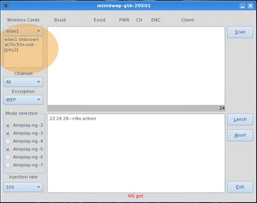
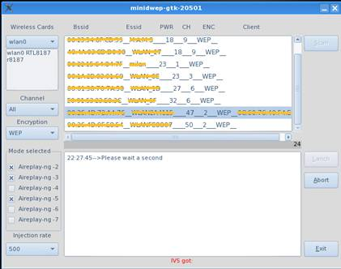
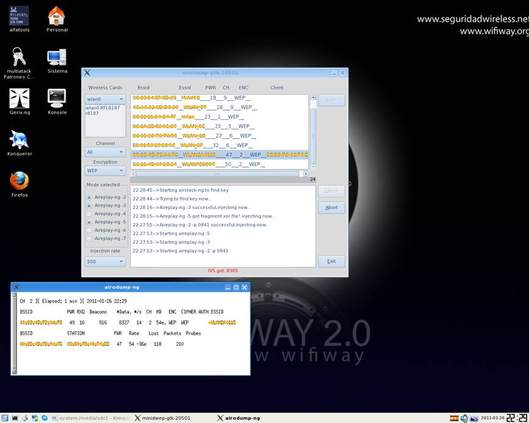
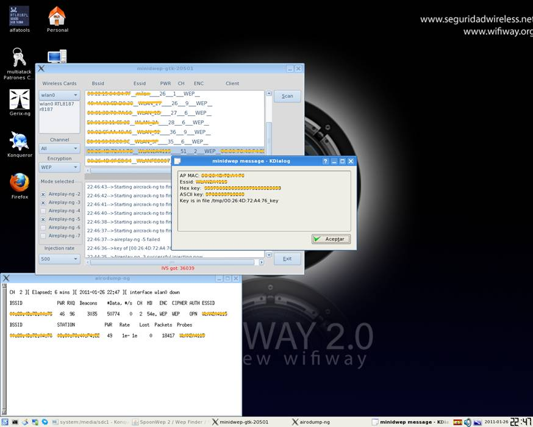

Minidwep
Esta es de las ultimas utilidades que han ido apareciendo, es sin duda la mas fácil de utilizar. Hay que matizar que para este ejemplo hemos conectado a nuestra red un ordenador a Internet por wifi. Por lo que nuestra red aparecerá con un cliente asociado, pero no es imprescindible
Al empezar nos saldrá la siguiente pantalla.

Donde esta marcado el circulo, ahí tenemos que seleccionar nuestro adaptador wifi.
Hecho esto solo tenemos que pulsar el botón de Scan y esperar a que termine de escanear, una vez terminado nos aparecerán las redes que tenemos a nuestro alcance, como aparece en la siguiente imagen.

Ahora podemos ver que nuestra red que tiene un cliente asociado, por lo que nos va a ser relativamente fácil sacar la clave, vuelvo a repetir que no es imprescindible tener un cliente asociado, pero nos facilita mucho el trabajo y aumentan las posibilidades de éxito. Una vez seleccionada la red pulsamos el botón lanch y empezara a capturar paquetes como se muestra en la imagen.

En la imagen se puede ver que se han capturado ya 8327 datas así que ya solo queda esperar que nos salga la clave, solo es cuestión de tiempo. En la imagen siguiente se nos muestra ya la clave tanto en Hexadecimal como en ASCII en esta ocasión hemos necesitado 50774 datas.

Vuelvo a recordar que esto no es una ciencia exacta, así que unas veces necesitaremos más tiempo y en otras menos tiempo, en este ejemplo lo hemos conseguido 6 minutos.